Example - Hello World Widget
This example will demonstrate the differents steps for building a Hello
World Widget
Step 1 - Creating the project
Step 2 - Creating a new form using Qt Designer
Step 3 - Adding your form to the project
Step 4 - Subclassing your form
Step 5 - Creating a main file
Step 6 - Compiling
First, close all opened project.
Go to the Project menu and choose "New..." action
A dialog appear, select QtGui (Our example will be a widget).
Set project name and directory.
cf. 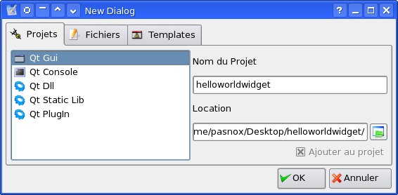
Go to the project menu, "Add -> New Form".
This will open Qt Designer.
If the template dialog appear, choose template Widget and click Create,
else go to the File menu and choose "New Form" for opening the dialog.
cf. 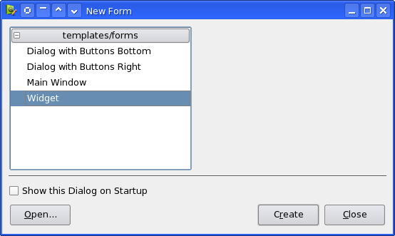
From here, keep in mind that uic will create a namespace based on your
widget name.
Set the WindowTitle property to "Hello World Widget'
Set widget name to "UIHelloWorld", and save the widget in the src/ui of
your project path.
cf. 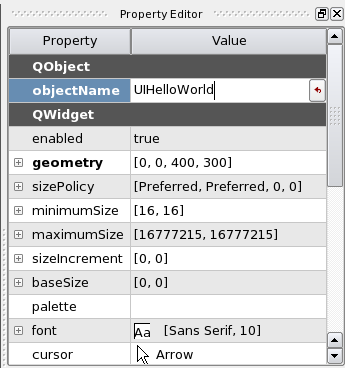
Note that you must named your file as the widget name + .ui (ie:
UIHelloWorld.ui).
You can now close Qt Designer.
Go to the project menu, "Add -> Existing Files".
This will open the Add dialog in the project path.
Go to src/ui and select your ui file, click Open (you don't need to
change the project & platform).
cf. 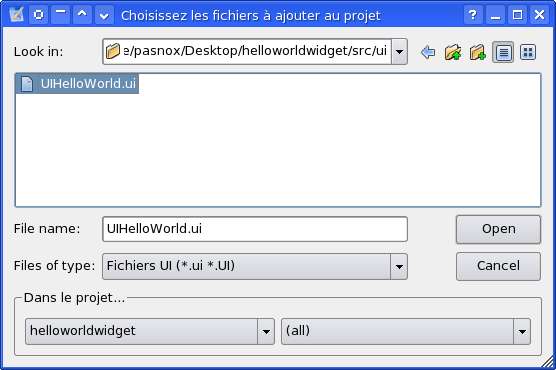
As resulting, you now have a new entry in the project tree under the
Form item.
cf. 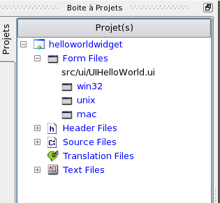
Double click on the UIHelloWorld.ui form, this will open a code editor
for this form/class.
You now need to subclass your ui file.
Click on the form button on top, as your class doesn't exists, the
subclass wizard will appear.
For now, you must remember, the template you have used for your ui file.
You have choosen Widget template, so the base class is QWidget
cf. 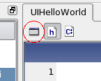
cf. 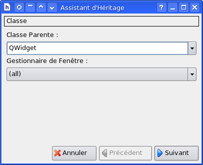
Now you can press twice the Next button.
You can modify the generated class before terminate the wizard.
On wizard exit, a header informations can appear allowing you to create
a small header text informations on the class.
Do what you want.
The new files will be open automatically.
The ui file will be reopened with Qt Designer, you can close it.
The last thing to do is to create a main file for your project.
Go to the project menu, choose "Add -> New File...".
This will open the New File Dialog.
Choose Main File and fill the filename with "main".
You can left untouch the location path witch is the src dir of your
project by default.
You can now click OK.
If the header informations dialog appear you can cancel it.
cf. 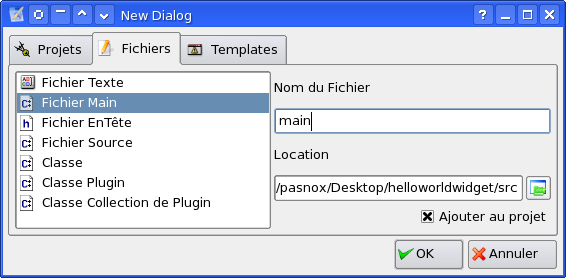
The platform chooser will appear, click OK.
cf. 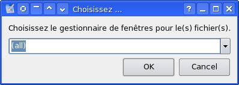
A new dialog will appear, allowing you to choose the main widget for
your application.
Click OK.
cf. 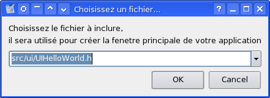
You are ready to compile your project!
But first, let's go into the source code of your main file.
On the tab of the main file, click on the source button to show the
source file.
cf. 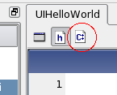
Replace :
UIHelloWorld w;
w.show();
By :
UIHelloWorld::self()->show();
Why this ? only because by default, Qt4DS Monkey create a static member
allowing to instanciate an unique object and access it by the self()
member.
You are really ready to compil!
Go to Build Menu, choose "Build -> Current" (you can use the F4
shortcut).
If no error appear, you have successfully compil your first Hello World
Widget Example with Qt4DS Monkey, Good!
To test it, go to the Build menu, choose "Execute..." (or use F11
shortcut).
A dialog appear allowing you to add parameters, click OK.
Your Hello World Widget application is shown to you.
cf. 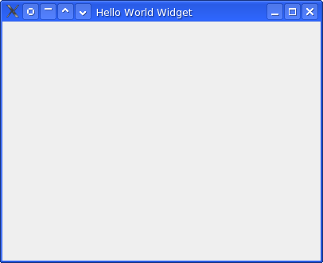
PS: This tutorial works, the only things that you need to check is a
correct Qt4 path in Options, and if you are on Windows OS, don't forget
to add mingw path to the variables environment (LIB, INCLUDE, and
add mingw bin path to PATH)
You are now ready to use the power of Qt4DS Monkey :)
Documentation revision : 2006/03/30,
By Nox P@sNox